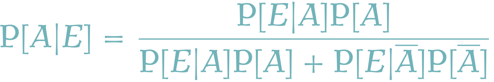

$$
%%% 演算子
%%% 線型代数学
%%% 複素解析学 %%% 集合と位相
%%% 形式言語理論 %%% Graph Theory
%%% 多様体 %%% 代数 %%% 代数的位相幾何学 %%% 微分幾何学
%%% 函数解析
%%% 積分論
%%% Fourier解析 %%% 数値解析
%%% 確率論
%%% 情報理論 %%% 量子論 %%% 最適化 %%% 数理ファイナンス
%%% 偏微分方程式
%%% 常微分方程式 %%% 統計力学 %%% 解析力学
%%% 統計的因果推論 %%% 応用統計学 %%% 数理統計
%%% 計量経済学
%%% 無限次元統計模型の理論
%%% Banach Lattices
%%% 圏 %代数の圏 %Metric space & Contraction maps %確率空間とMarkov核の圏 %Sober space & continuous map %Category of open subsets %Category of sheave %Category of presheave, PSh(C)=[C^op,set]のこと %Convergence spaceの圏 %一様空間と一様連続写像の圏 %フレームとフレームの射 %その反対圏 %滑らかな多様体の圏 %Quiverの圏
%%% SMC
%%% 括弧類
%%% 予約語
%%% 略記
%%% 矢印類 $$
今回の内容
第一審の裁判において，事実認定が中心的な問題である．この際に起き得る誤謬を，ベイズの方法を用いてどう回避できるか？という例が３つ挙げられている．
主観確率の基本的な計算方法と捜査官の誤謬
殺人事件の加害者はAとBのどちらか？利用可能な情報は次のみ：被疑者のA, Bは同居しており，そのうちどちらかが加害者であることはわかっているものとする．
- 台所に左利きの包丁があった．Aが左利きである確率はいくらか？ただし，人間が左利きである確率は1割とする．
- Aは左利きであること，被害者の外傷の部位や凶器の形状から加害者も左利きであったことは確定的であるとする．Aに逮捕令状を出しても良いだろうか？ただし，利き手の情報を除けば，AかBかは完全に五分五分であるとする．なお，共犯はなく，どちらか一方の単独犯であることも確実であるとする．
- AもBも左利きである可能性があるため，5割より少し大きい．
- AもBも左利きである可能性があるため，9割強である．95%を一つの基準にするなら，逮捕令状は出すべきではない．
この問題のポイントは「条件付き確率」への理解である．
- 事象を \[
A:=\left\{\text{Aは左利きである}\right\}
\] \[
B:=\left\{\text{Bは左利きである}\right\}
\] と定めると， \[
\begin{align*}
&\quad\;\mathrm{P}[A\cup B]\\
&=\mathrm{P}[A]+\mathrm{P}[B]-\mathrm{P}[A\cap B]\\
&=\frac{19}{100}
\end{align*}
\] これより，条件付き確率の定義から \[
\begin{align*}
\mathrm{P}[A|A\cup B]=\frac{\mathrm{P}[A]}{\mathrm{P}[A\cup B]}\\
&=\frac{10}{19}\approx52.6\%
\end{align*}
\]
今回の肝は，事象 \(A,B,C\) を互いに独立に設定したために，各積事象 \(A\cap B,B\cap C,C\cap A\) が悉く計算可能なものとして得られた，という点である．これを計算しておけば，欲しい値がこれらの言葉で得られているから，答えまで一本道で辿り着ける，という訳である．
モンティ・ホール問題 も条件付けを正しく行えない（「何が分母か」を分別せず，違う次元の話を混同する）ことによって起こるパラドックスの有名な例である．
「捜査官の誤謬」は「条件付け」を正しく行わないことにより起こる誤謬である．これを回避するには，独立な事象 \(A,B\) を抽出し，これらの確率を計算し，最終的に求めたい確率が何かを正しく特定することが重要である．
ベイズの公式と検察官の誤謬
ドーピング検査の結果から，ある日本選手Iが金メダルを剥奪された．弁護人としては，どのような弁護の筋があるか？
- 本ドーピング検査において，禁止薬物をを用いていない人に対して陽性の結果が出る（偽陽性）確率は1%で，逆の偽陰性も1%である．
- 日本選手で，禁止薬物を用いている割合は0.1%とする．当該日本選手Iもこの割合に従うものとする（とりわけ禁止薬物を使っていそうな理由・いそうでない理由はないものとする）．
各事象を \[
A:=\left\{\text{ I は薬物を使用していた}\right\}
\] \[
E:=\left\{\text{ I に陽性反応が出た}\right\}
\] と設定する．今回は \(A,E\) は独立ではないことに注意．例えば，後からわかることだが， \[\mathrm{P}[A\cap E]\ne\mathrm{P}[A]\mathrm{P}[E]\] である．ここで，条件付き確率の計算の問題に分け入ることになる．今回与えられている条件はそれぞれ，
\[
\begin{align*}
\text{1.}&\qquad\mathrm{P}[\overline{E}|A]=\frac{1}{100},\\
&\qquad\mathrm{P}[E|\overline{A}]=\frac{1}{100}\\
\text{2.}&\qquad\mathrm{P}[A]=\frac{1}{1000}
\end{align*}
\]
と表現できており，知りたい値は，今現在Iが本当に薬を使っていたという確率 \(\mathrm{P}[A|E]\) である．
実は，これは全く大きな値ではない！これは，そもそも薬物を使っている人が少なく，健常な人の方が大多数であるために，検査で陽性が出たからといってそれが本当に薬物を使っている人から出た「真の陽性」である確率が極めて小さくなってしまうという普遍的な現象である．
求めたい量 \(\mathrm{P}[A|E]\) は \[
\begin{align*}
&\quad\;\mathrm{P}[A|E]\\
&=\frac{\mathrm{P}[A\cap E]}{\mathrm{P}[E]}\\
&\overset{\text{(2)}}{=}\frac{\mathrm{P}[E|A]\mathrm{P}[A]}{\mathrm{P}[E]}\\
&\overset{\text{(3)}}{=}\frac{\mathrm{P}[E|A]\mathrm{P}[A]}{\mathrm{P}[E|A]\mathrm{P}[A]+\mathrm{P}[E|\overline{A}]\mathrm{P}[\overline{A}]}
\end{align*}
\tag{1}\] と式変形できる．この右辺は，全て既知の値で表現できている．
なお，途中の式変形については，条件付き確率の定義から
\[
\mathrm{P}[A\cap E]=\mathrm{P}[E|A]\mathrm{P}[A]
\tag{2}\]
と，全確率の法則
\[
\begin{align*}
&\quad\;\mathrm{P}[E|A]\mathrm{P}[A]+\mathrm{P}[E|\overline{A}]\mathrm{P}[\overline{A}]\\
&=\frac{\mathrm{P}[E\cap A]}{\mathrm{P}[A]}\mathrm{P}[A]\\
&\qquad\qquad+\frac{\mathrm{P}[E\cap\overline{A}]}{\mathrm{P}[\overline{A}]}\mathrm{P}[\overline{A}]\\
&=\mathrm{P}[E\cap A]+\mathrm{P}[E\cap\overline{A}]\\
&=\mathrm{P}[E]
\end{align*}
\tag{3}\] とを用いた．
実際に計算してみると， \[
\mathrm{P}[A|E]=\frac{99}{1098}\approx9.0\%.
\] 選手Iは実際は薬を使っていない可能性の方がよっぽど高いのである．
この検察官の誤謬は，特に不良品検出の文脈では深刻なバイアスになり，英語では基準確率の誤謬ともいう．
\(n\) 人の母集団に，ある病気の検査を行うとしよう． \[\begin{cases}A_i:=\left\{i\text{は有病}\right\},\\B_i:=\left\{i\text{は陽性}\right\}.\end{cases}\quad i\in[n].\] としたとき，
- \(\alpha:=P[B_i|A_i^\complement]\) を偽陽率・危険度という．検定一般に言う，第一種の過誤率である．
- 患者が有病であるときに陽性が出る確率 \(1-\alpha\) の値を 感度(sensiticity)という．
- \(\beta:=P[B_i^\complement|A_i]\) を偽陰率という．検定一般に言う，第二種の過誤率である．
- 患者が無病であるときに陰性が出る確率 \(1-\beta\) の値を特異度(specificity)という． 検定一般に言う検出力(power)である．
統計的検定では第一種の過誤率を重く見て，これを制限した上での第二種の過誤率の低さを指標とする．このために「検出力」が重要．一方で失病検査の際は第一種の過誤率が大変重要であり，これに「感度」という名前がついている．
このような一般的な設定の下で，陽性の結果を見て，患者の有病率を \(1-\beta\) だと結論づけてしまう誤謬を基準確率の誤謬という．
ベイズ統計学
ベイズの公式
Section 1.2 で使った式変形 Equation 1 の最左辺と最右辺のみに注目して公式化すると，次のようになる： 
これを（分割 \(\Omega=A\sqcup\overline{A}\) に関する）Bayesの公式という．
これは独立性の特徴付け \[
\mathrm{P}[A|E]=\mathrm{P}[A],\quad\mathrm{P}[E|A]=\mathrm{P}[E]
\] の一般化になっているともみれる．
ベイズ統計学
事前に確率 \(\mathrm{P}[A]\) を想定しておく．そして，\(A\) に関連する観測の結果 \(\mathrm{P}[E|A]\) を見てから，ベイズの公式を通じて \(\mathrm{P}[A|E]\) を計算し，事象 \(A\) に関する理解を深める営みが，ベイズ統計学の雛形である．
この \(\mathrm{P}[A]\) を事前確率，\(\mathrm{P}[A|E]\) を事後確率という．
- 事象 \(A\) として何を選んでも良い．
- 事前情報 \(\mathrm{P}[A]\) を推論に取り込む余地がある．
- \(A\) と \(E\) に対して多様な関係を想定できる．
- \(\mathrm{P}[A|E]\) は一般にグラフの形で与えられるので，（他の統計手法と比べて）情報量が多い．
- ベイズの公式が全てであり，何をやっているかがわかりやすい．
点がよくベイズ統計学の美点として挙げられる．
ベイズ計算
前節で解説した通り，ベイズ統計学はベイズの公式が全てであり，原理的には極めて明快である．では，何が難しいかというと，一般的な形のベイズの公式 \[
p(\theta|x)=\frac{p(x|\theta)p(\theta)}{\int_\Theta p(x|\theta)p(\theta)\,d\theta}
\] は，最も単純な場合でも，計算が不可能であるという点である．積分は現代では高校で習う数学の範囲であるが，実際に計算できる積分など応用の現場では都合よく出てこないのである．
従って，ベイズ統計学の研究において，計算手法の研究が極めて重要な位置を占める．この分野をベイズ計算というのである．詳しくは ベイズ計算とは何か の記事を参照してほしい．
References
Agresti, A. (2012). Categorical data analysis (3rd ed.). John Wiley & Sons, Inc.
Arias-Castro, E. (2022). Principles of statistical analysis: Learning from randomized experiments (Vol. 15). Cambridge University Press.
Yerushalmy, J. (1947). Statistical problems in assessing methods of medical diagnosis, with special reference to x-ray techniques. Public Health Reports (Washington, D.C. : 1896), 62(40), 1432–1449.